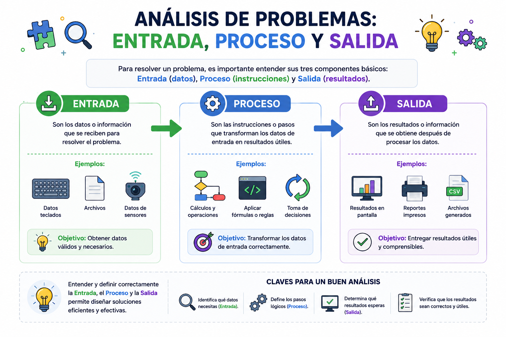

Cuando un cajero automático te entrega dinero, ocurre un minucioso análisis de tres etapas. Tu tarjeta y el PIN que ingresas representan la Entrada. El sistema procesa esta información verificando tu saldo y calculando cuántos billetes debe dispensar; esto es el Proceso. Finalmente, la máquina expulsando el dinero en efectivo y el recibo impreso constituyen la Salida. Descomponer problemas cotidianos en estos tres bloques es el secreto para diseñar cualquier software exitoso.
⚠️ Debes visualizar el video completo sin adelantar para desbloquear la evaluación.
Material audiovisual adaptado con fines estrictamente educativos. Créditos del autor: Eddy Ordoñez.

Antes de sentarse a escribir líneas de código desordenadas, un programador debe aplicar la ingeniería de software para comprender el problema a fondo. El método más efectivo para mapear una solución lógica consiste en segmentar el flujo de la información utilizando la famosa estructura de tres fases de procesamiento de datos.
Si estamos diseñando un software para calcular el promedio final de calificaciones, ¿cuál corresponde a la fase de Entrada?
Dentro de la arquitectura de bloques de un algoritmo, ¿en qué consiste detalladamente la etapa de "Proceso"?
¿Qué grave error metodológico ocurre si intentas generar un resultado de Salida sin definir Entrada ni Proceso?
En el ejemplo del cajero automático, ¿qué representa el dinero en físico y el recibo impreso?
Según la "Regla de Oro del Análisis" explicada en la lectura, ¿qué es imposible realizar?
Al calcular el Índice de Masa Corporal (IMC), ¿qué papel juegan el "peso" y la "altura"?
¿Qué tipo de operaciones pertenecen estrictamente al bloque de Proceso?
De acuerdo con Sznajdleder (2012), la Salida se define como:
¿Qué autor académico respalda la definición de que las Entradas constituyen las variables del mundo exterior requeridas?
En informática, ¿cuál es el orden secuencial estricto que sigue la información?